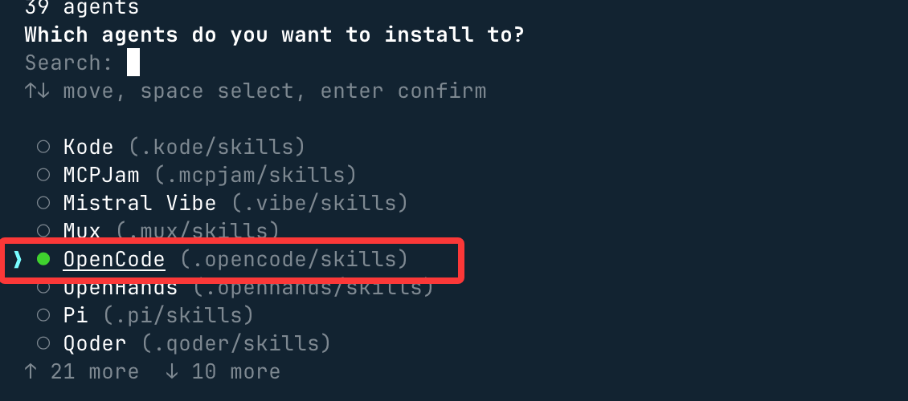
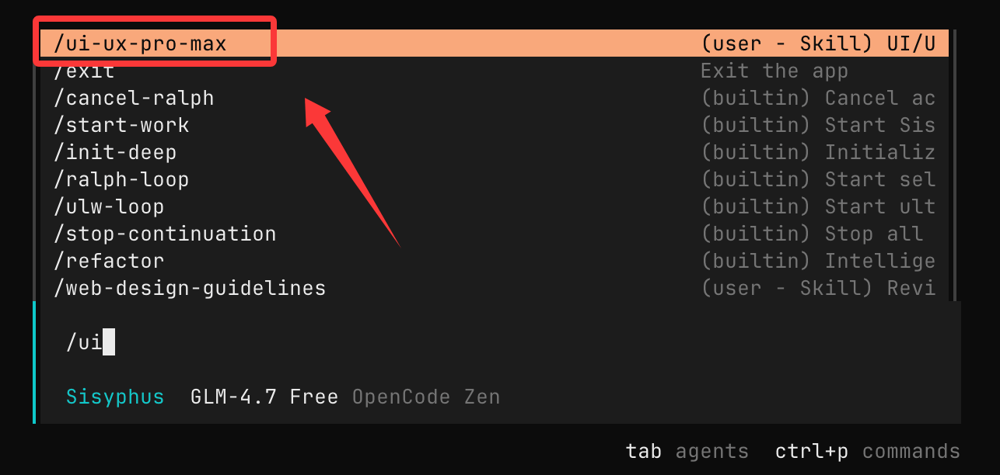
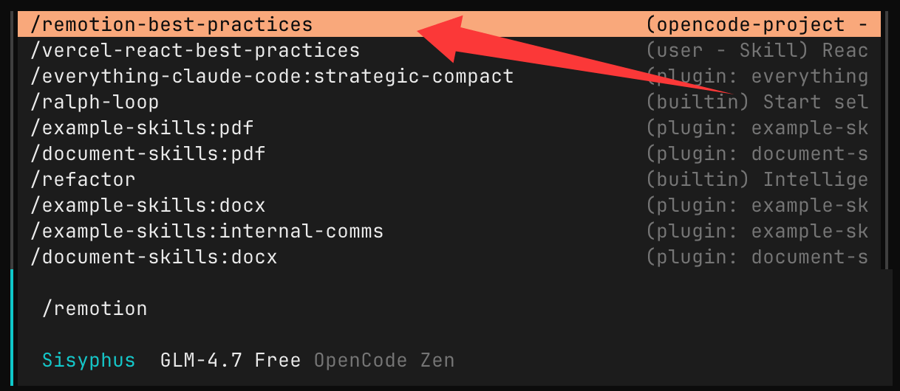
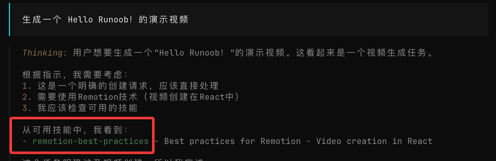

OpenCode skills の使用
以前の内容では、OpenCode と skills について学びました。まだ読んでいない場合は、以下を参照してください：
次に、OpenCode で skills を使用する方法を紹介します。
現在、世の中には既製の skills が多数あり、すぐに使用できます。以下の場所でhttps://skills.sh/より多くの skill を探すことができます。
インストール方法：
npx skills add <owner/repo>
注：npx についてよくわからない場合は、以下を参照してください：npx 入門チュートリアル
ui-ux-pro-max
次に、ui-ux-pro-max という skill を使用してデモを行います。アドレス：https://skills.sh/nextlevelbuilder/ui-ux-pro-max-skill/ui-ux-pro-max。
UI/UX Pro Max は、プロフェッショナルレベルのユーザーインターフェース（UI）とユーザーエクスペリエンス（UX）を構築するための構造化されたデザイン知識と自動化支援を提供する AI デザインインテリジェントスキル（AI Skill）です。主に AI コーディングアシスタント（Claude Code、Cursor、Windsurf など）との統合に使用されます。
UI/UX Pro Max には検索可能なデザインデータベースが含まれており、自然言語のプロンプトに基づいて、インターフェーススタイル、配色、タイポグラフィ、コンポーネント実装方法をインテリジェントに推奨します。
インストールコマンド：
npx skills add https://github.com/nextlevelbuilder/ui-ux-pro-max-skill --skill ui-ux-pro-max
インストール中に、必要な環境（OpenCode など）を選択できます：

次に、ここで現在のディレクトリ、つまり先ほど作成したopencode-runoob-test、もう一つのオプションGlobalはグローバルインストールです：

次に、そのまま Enter キーを押し続けるだけでOKです。
使用opencodeコマンドで OpenCode を開き、入力/uiすると、インストールされた skill を確認できます：

次に、要件を直接入力できます：
ペット美容サービスのランディングページを構築し、スタイルは活発で親しみやすく、予約タイプのコールトゥアクションボタンを設置します。
AI がインストールした skill を自動的に呼び出してデザインするので、そのまま Enter キーを押し続けるだけでOKです：

次に、ディレクトリとファイルが自動生成されます：

そして最終結果を確認すると、はるかに見た目が良くなります：

remotion-best-practices
次に、remotion-best-practices という skill を使用してデモを行います。
- Opencode：AI にコードを書かせてプロセスを自動化するためのもの
- remotion-best-practices：React を使ってビデオを直接生成するための skills
remotion-best-practices は Remotion 向けの専門スキルであり、多数のルールファイル（公式ベストプラクティスに基づく）が含まれています。例：
- 3D コンテンツ
- アニメーションの基礎
- メディアのインポート（画像、オーディオ、フォント）
- 字幕と字幕の同期
- シーケンスとシーンの整理
- 透明ビデオと編集
- テキストアニメーション & 補間メソッド
skill のアドレス：https://skills.sh/remotion-dev/skills/remotion-best-practices
インストールと使用方法
始める前に、まずディレクトリを作成しましょうopencode-runoob-test:
mkdir opencode-runoob-test cd opencode-runoob-test
opencode-runoob-test ディレクトリで、npx コマンドを使用してインストールできます：
npx skills add remotion-dev/skills

インストール中に、必要な環境（OpenCode など）を選択できます：
次に、ここで現在のディレクトリ、つまり先ほど作成したopencode-runoob-test、もう一つのオプションGlobalはグローバルインストールです：
次に、そのまま Enter キーを押し続けるだけでOKです。その後、インストールディレクトリとサポートされている開発ツールが表示されます：


OpenCode を開いて入力することもできます/remotionすると、この skill を確認できます：

次に、入力ボックスに入力します：
生成一个 Hello Runoob！的演示视频
次に、AI がこの skill（スキル）を見つけます：

その後、AI はこの skill を使用して設計と作成を開始します：

クリックしてノートを共有
<p style="font-size:14px;">ノートはこの記事の内容を拡張したものである必要があります！</p><br> <p style="font-size:12px;"><a href="../tougao.html" target="_blank">記事投稿は、ここをクリックしてください</a></p> <p style="font-size:14px;"><a href="../w3cnote/runoob-user-test-intro.html" target="_blank">登録招待コードの取得方法</a></p> <h3 class="text-muted"><i class="fa fa-info-circle" aria-hidden="true"></i> ノートを共有する前に<a href=";.html" class="runoob-pop">ログイン</a>する必要があります！</h3> <p><a href="../w3cnote/runoob-user-test-intro.html" target="_blank">登録招待コードの取得方法</a></p>